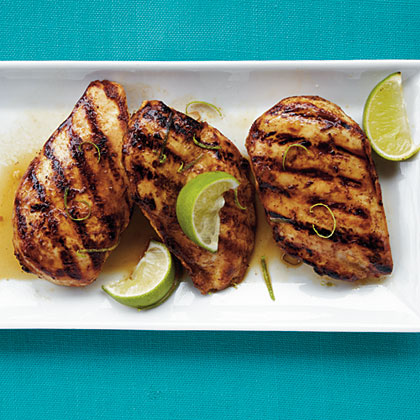

Honey-Lime Chicken
This chicken tastes great with a romaine salad and a side of corn, or sliced and turned into tacos with rice and beans.
Ingredients
- 3 tablespoons honey, divided
- 2 tablespoons fresh lime juice
- 1 tablespoon olive oil
- 1 teaspoon ground cumin
- ½ teaspoon kosher salt
- ¼ teaspoon ground red pepper
- ¼ teaspoon freshly ground black pepper
- 3 garlic cloves, minced
- 4 (6-ounce) skinless, boneless chicken breast halves
- ½ teaspoon grated lime rind
- Cooking spray
Steps
- Combine 2 tablespoons honey and next 7 ingredients (through garlic) in a large heavy-duty zip-top plastic bag. Add chicken; seal bag. Marinate in refrigerator overnight, turning occasionally.
- Preheat grill to high heat.
- Combine remaining 1 tablespoon honey and lime rind. Remove chicken from bag; discard marinade. Place chicken on grill rack coated with cooking spray. Grill 5 minutes on each side, basting with reserved honey mixture during last 2 minutes of cooking time. Cover and let stand 5 minutes.